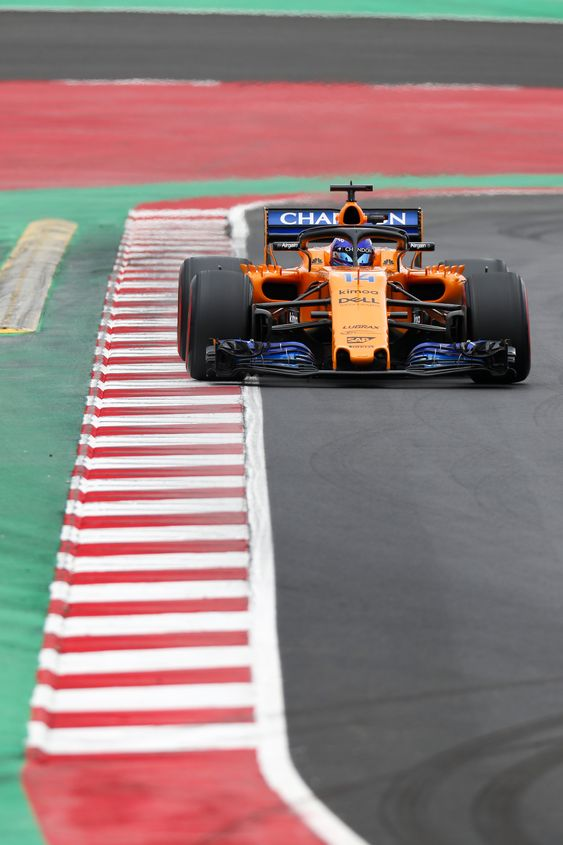

Basándonos en las últimas versiones de las reglas publicadas por la FIA, enumeramos los cambios más importantes en este artículo y mostramos lo que será diferente en 2024 en comparación con el año pasado.
El número de piezas de motor permitidas por piloto se iba a reducir aún más para la temporada 2024 de Fórmula 1, pero finalmente queda igual. Según el artículo 28.2, un piloto sólo podrá utilizar cuatro cuatro motores de combustión (es decir, cuatro ICE), así como cuatro MGU-H, MGU-K y turbocompresores. El resto de componentes están también restringidos de la misma manera que en la temporada 2023, es decir, dos baterías, dos unidades de control electrónico (CE) y ocho de cada uno de los cuatro componentes del sistema de escape.
Es uno de los grandes cambios para la temporada 2024 de F1. Hasta ahora, el DRS, el dispositivo que permite abrir el alerón trasero y tener un extra de velocidad durante una parte del circuito, se permitía después de la segunda vuelta (a partir de la tercera), pero en 2024 se podrá activar ya a partir de la segunda vuelta siempre y cuando se esté a menos de un segundo del coche de delante en el punto de detección.